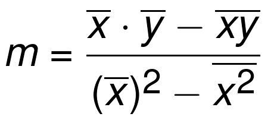
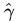

一、linear regression
y = mx + b, where m is the slope and b is the y-intercept. | |
 | 线性回归，是利用数理统计中回归分析，来确定两种或两种以上变量间相互依赖的定量关系的一种统计分析方法，运用十分广泛。其表达形式为y = w'x+e，e为误差服从均值为0的正态分布。 必须要有比较精确方式决定理想的线性方程式。可以要求误差平方的总和为最小，做为决定理想的线性方程式的准则，这样的方法就称为最小平方误差(least squares error)或是线性回归。 |
 | |
 真实数据的Yi与回归方程估算出来的Yi-head的之间的差的和 真实数据的Yi与平均出来的Yi-head的之间的差的和 | 可决系数的计算式： 回归平方和（SSR）在总变差（SST）中所占的比重称为可决系数， 可决系数可以作为综合度量回归模型对样本观测值拟合优度的度量指标。可决系数越大，说明在总变差中由模型作出了解释的部分占的比重越大，模型拟合优度越好。反之可决系数小，说明模型对样本观测值的拟合程度越差。 The equation is essentially 1 minus the division of the squared error of the regression line and the squared error of the mean y line. |
二、K Nearest Neighbors
 | plot1 = [1,3] plot2 = [2,5] euclidean_distance = sqrt( (plot1[0]-plot2[0])**2 + (plot1[1]-plot2[1])**2 ) |
三、SVM（支持向量机）
 | 在超平面w*x+b=0确定的情况下，|w*x+b|能够表示点x到距离超平面的远近，而通过观察w*x+b的符号与类标记y的符号是否一致可判断分类是否正确，所以，可以用(y*(w*x+b))的正负性来判定或表示分类的正确性。于此，我们便引出了函数间隔（functional margin）的概念。 定义函数间隔（用表示）为：  便为超平面(w, b)关于训练数据集T的函数间隔： |
 | 事实上，我们可以对法向量w加些约束条件，从而引出真正定义点到超平面的距离--几何间隔（geometrical margin）的概念。 假定对于一个点 x ，令其垂直投影到超平面上的对应点为 x0 ，w 是垂直于超平面的一个向量， |
    | 从上述函数间隔和几何间隔的定义可以看出：几何间隔就是函数间隔除以||w||，而且函数间隔y*(wx+b) = y*f(x)实际上就是|f(x)|，只是人为定义的一个间隔度量，而几何间隔|f(x)|/||w||才是直观上的点到超平面的距离。 |
四、Logistic回归
梯度上升算法

改进的随机梯度上升算法
只用一个样本点去更新回归系数